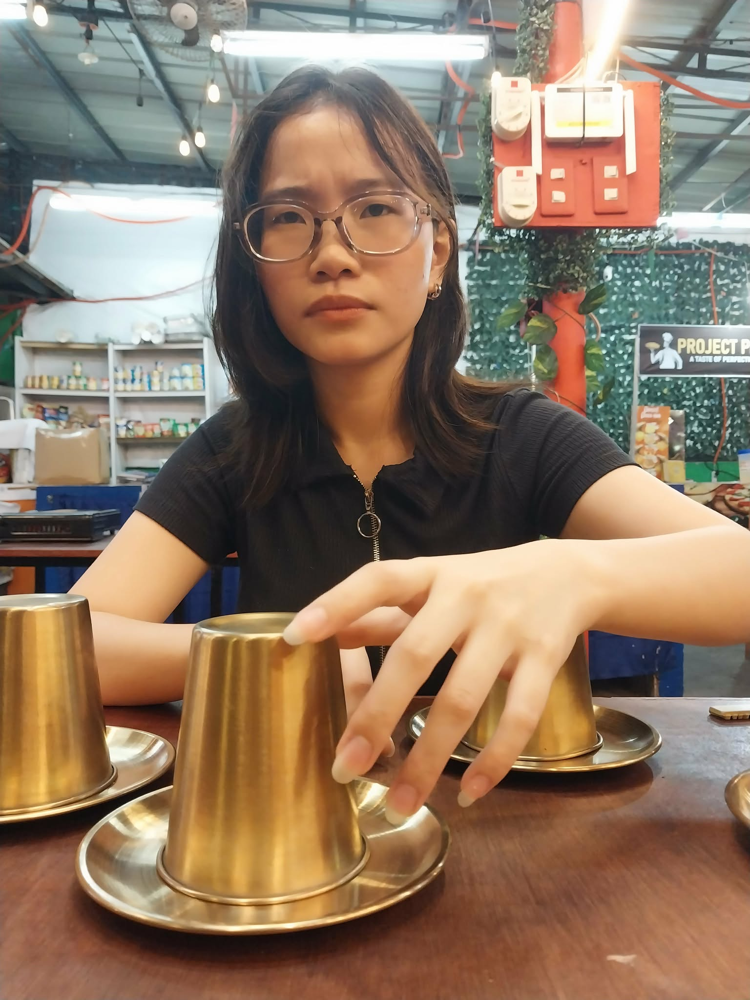
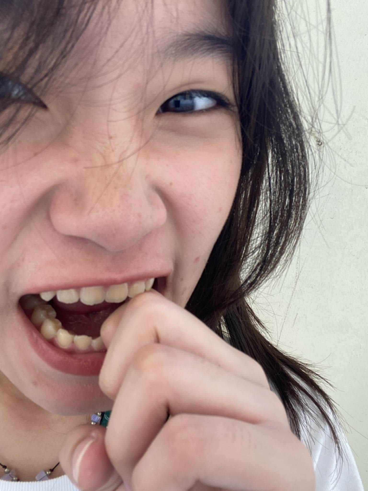

play me while you're here :)

my angry and cute little dragon, love yah!
I’m really sorry for what happened. I know I can be stubborn sometimes, and honestly, I probably deserve an award for being annoying once in a
while. But seriously, I never want to be the reason you feel upset. You mean way too much to me for that.
I know I’m not perfect, and sometimes I mess up without even realizing it until later. My brain really works like slow internet sometimes.
But please know my intentions are never bad, and I’d never intentionally hurt you. Thank you for still being patient with me even when
I make things harder than they need to be.
So this is me officially apologizing (and creating a website I know it's not even close to standard but I'll update this daily to your liking)
before you replace me with someone who actually listens the first time.
I miss our good vibes already, and I’d much rather be making you smile than sitting here overthinking everything.
I hope you can forgive me, bebii.

YEY! not angry na?
chat me na!